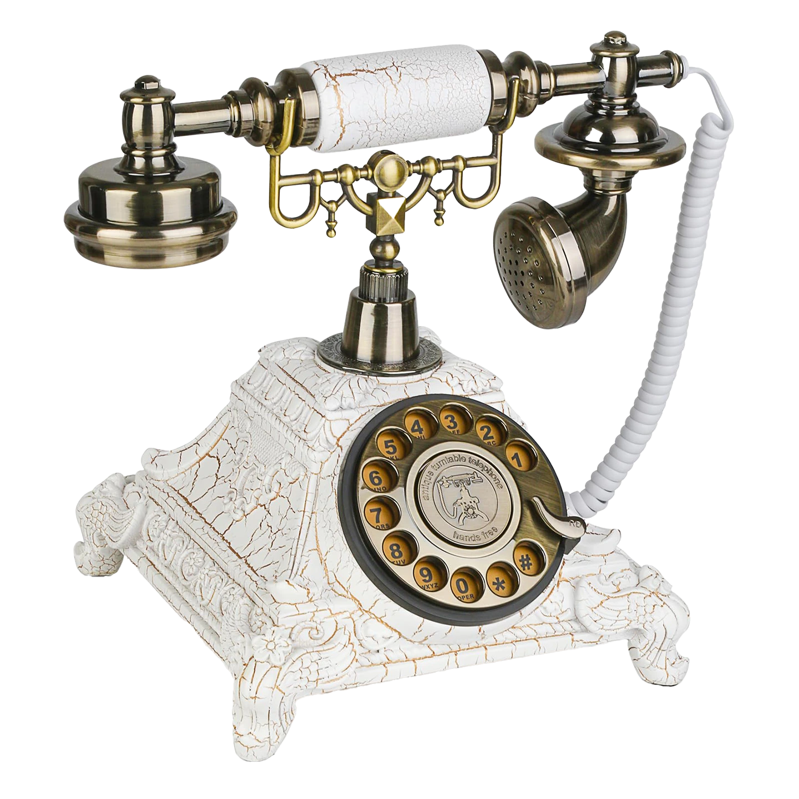
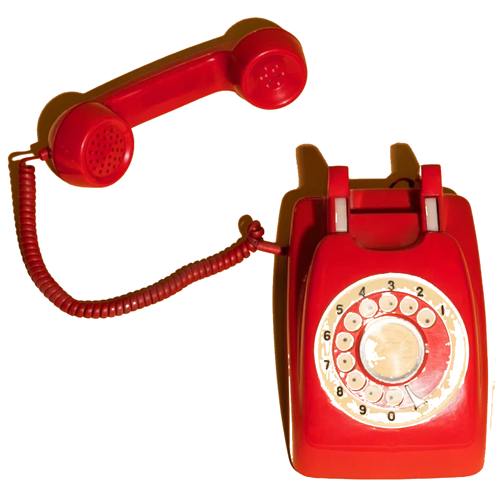
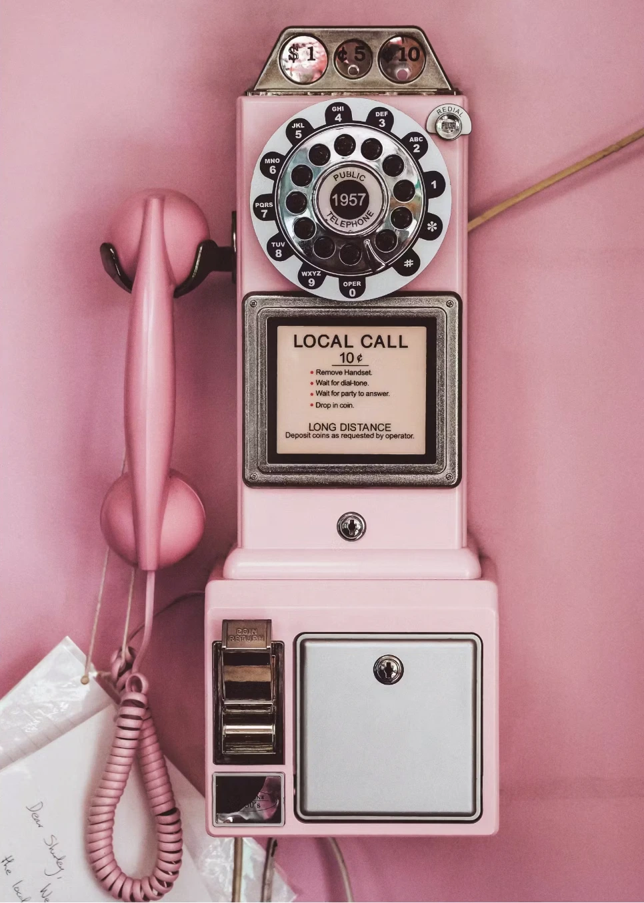
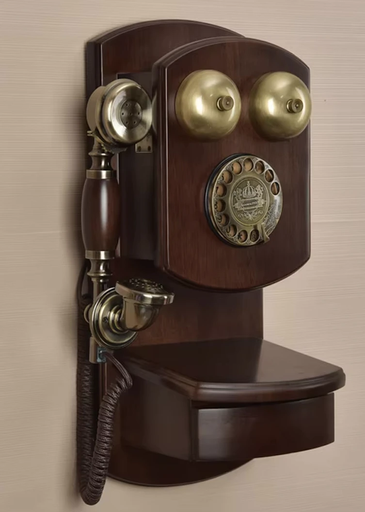
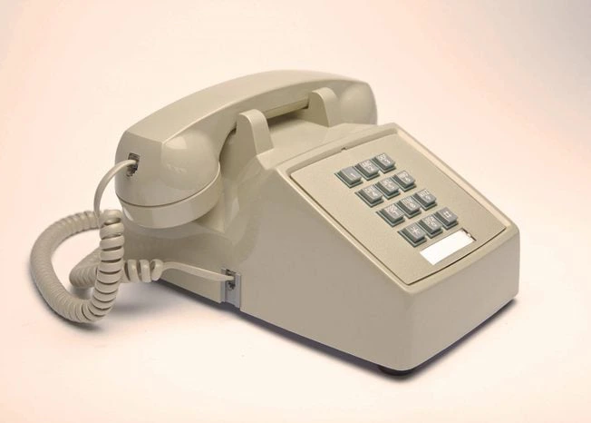

Latest Models
Step back to the cutting edge of the past. These once “new” releases showcase the innovation and flair that defined their era, capturing the excitement of a bygone future.
Our Best Seller
The fan favorites that never go out of style. These vintage gems have stood the test of time — beloved for their design, durability, and undeniable charm.
Saving the telephones of yesterday for tomorrow.
Most of the telephones we sell have been fully refurbished using a meticulous tailored process.
Classics
Timeless icons of design and reliability, the Classics collection pays homage to the golden age of communication. Built to last and made to be admired, these phones capture the essence of true vintage style.
Pink Collection
A playful blend of charm and nostalgia, these vintage phones turn every call into a statement in blush and rose hues.
Wooden Elegance
Crafted with rich textures and natural warmth, these phones bring a touch of sophistication to any space.
Boxy Retro
Defined by bold lines and sharp edges, the Boxy Retro series channels the unapologetic character of mid-century design. Perfect for collectors and design lovers who crave a statement piece with attitude.